あっちゃんとぼく
作品紹介
- あらすじ
- （現在、裏書（台本）が紛失しています）
- 制作年
- 20xx
- 脚本
- 黒澤知紘
- 画
- 前田健人
- 場面
- 12場面
あっちゃんとぼく 動画（準備中）
あっちゃんとぼく 画・脚本（現在、画のみ）
#1
#2
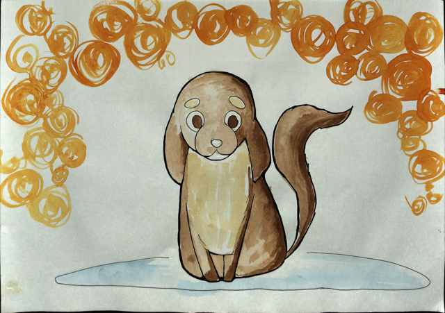
#3
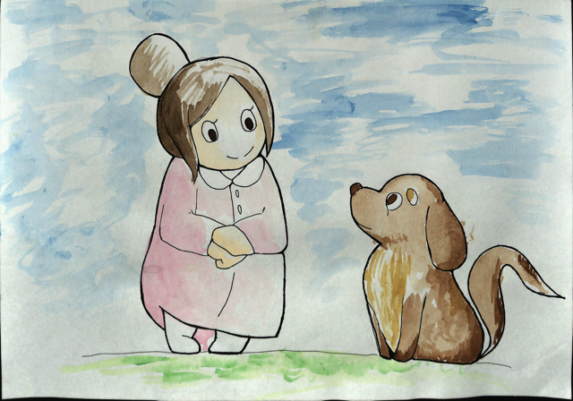
#4
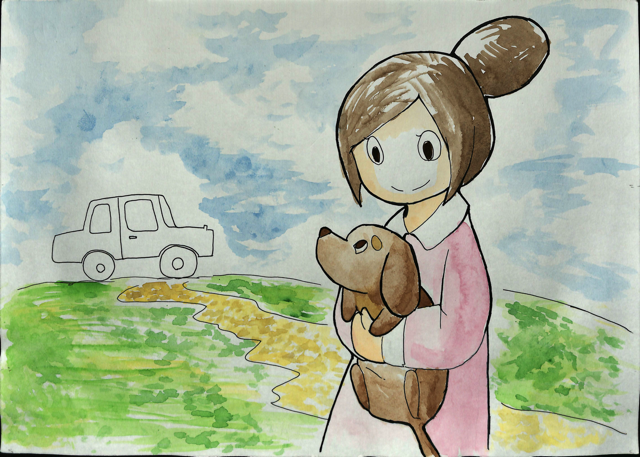
#5
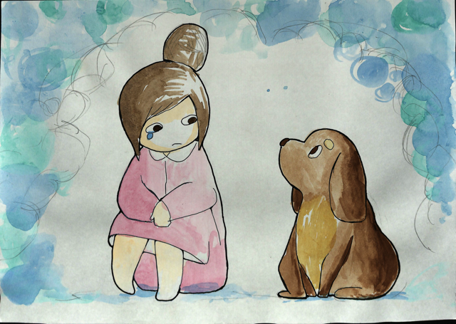
#6
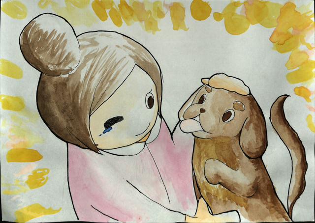
#7
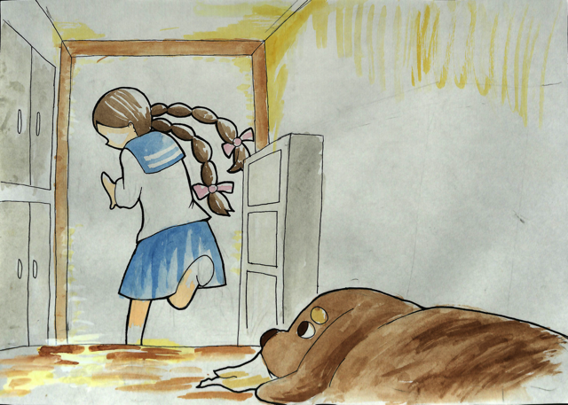
#8
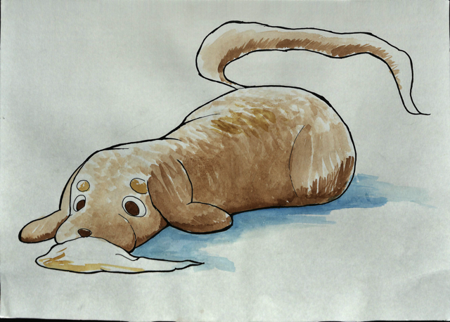
#9
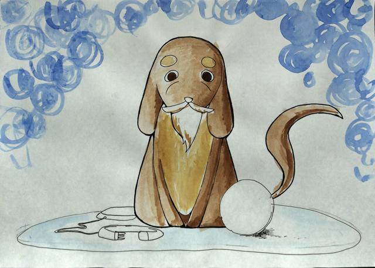
#10
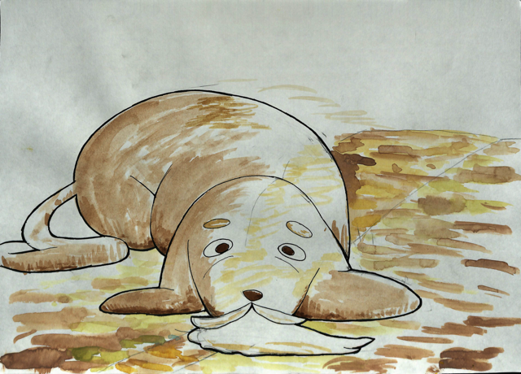
#11
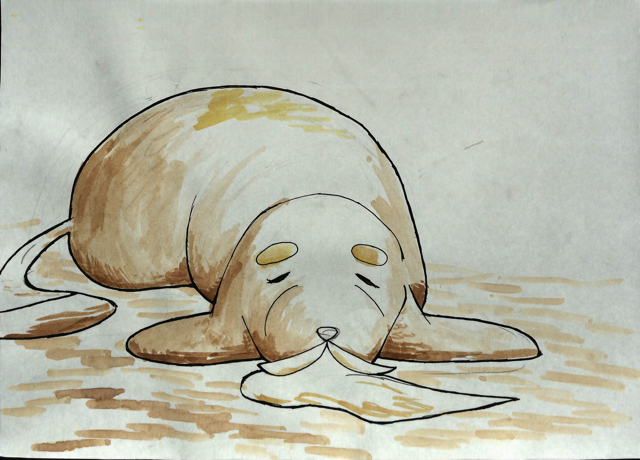
#12
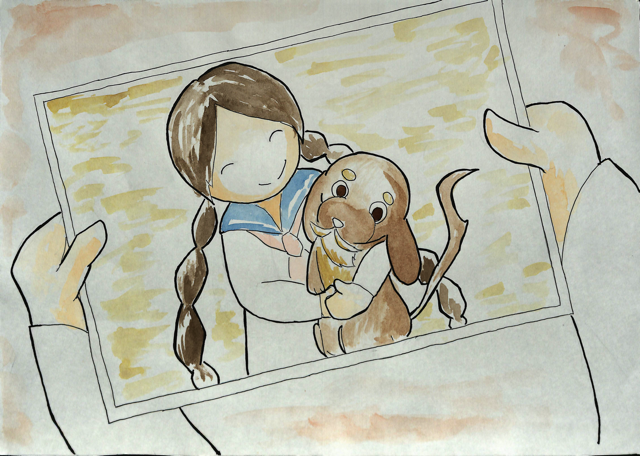
あっちゃんとぼく PDF（準備中）
以下のリンクから、『あっちゃんとぼく』のPDFデータをダウンロードできます。
ダウンロードして印刷し、厚紙などに貼ってご利用下さい。
（すみません、準備中です）